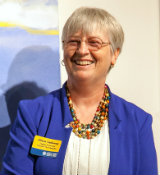
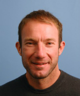
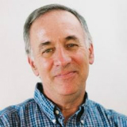

Home » Alumni Weekend » Alumni Weekend 2014 » Events » Teach-Ins: An Academic Afternoon
Teach-Ins: An Academic Afternoon
Teach-Ins: An Academic Afternoon featuring Alison Galloway, Ed Green, and Bruce Thompson

Be a student again for an afternoon – choose from a selection of lectures from faculty including historian Bruce Thompson, bioinformatics expert Ed Green, and forensic anthropologist Alison Galloway.
Teach-In: Alison Galloway - A Day in the Life of the Dead
2:15 – 3:30 p.m., Porter College Classroom
Alison Galloway, campus provost and executive vice chancellor and a renowned forensic anthropologist, will share “A Day in the Life of the Dead,” a vivid look at the sort of cases that a forensic anthropologist examines, and what information can be gathered from skeletal remains.
Galloway regularly consults with law enforcement officials in California and beyond who rely on her forensic skills when they need help identifying human remains. Many of the bodies she examines are homicide victims, and Galloway often appears in court as an expert witness to present her findings.
"Our role is to provide testimony based on what we found from the body," Galloway explained in an interview in 2010 after being named campus provost and executive vice chancellor. "We are the victim's only chance to provide information, which can result in a successful prosecution, or get somebody off who isn't guilty."
Please join us for this academic afternoon filled with stories about the sorts of cases that a forensic anthropologist receives, the process of examination and analysis, and what types of information can be gathered from skeletal remains. This is a teach-in that is all about what you don’t see on the popular television series Bones.
Teach-In: Ed Green – Genetics and Human Evolution
2:15 – 3:30 p.m., Porter College Classroom
Richard E. (Ed) Green, assistant professor in biomolecular engineering, will share surprising insights into evidence of interbreeding between Homo Sapiens and Neanderthals.
Green has been in the news recently for his surprising insights into human ancestry. He was, among many other things, leader of a team that showed that humans share DNA with Neanderthals. During his talk, he will discuss the technology behind the findings, explain the scientific results, how we are related to the Neanderthals, and what we can learn about human history from DNA sequences.
“The results kind of blur between the lines between species and make us even question the value of (species) as a concept, and I will get into that,” he said.
While Green will discuss advanced technology, he said the talk will be accessible to a general audience.
"The cool thing about working in human evolution, and giving talks about this, is people come ready to be interested in it. Everybody wants to know where we came from, who we are, and how we relate to the rest of the world. It is human nature, as they say.”
Click here to learn about Ed Green's work in the article, "Bioinformatics expert Ed Green awarded Searle Scholars grant." Click here to read "Neanderthal genome yields insights into human evolution and evidence of interbreeding."
Teach-In: Bruce Thompson
Spies: Espionage and Intelligence in the First and Second World Wars
2:15 – 3:30 p.m., Porter College Classroom
Bruce Thompson, a continuing lecturer in history and associate director of the Helen Diller Family Endowment Jewish Studies Program, will present a talk filled with cloak-and-dagger intrigue, “Spies: Espionage and Intelligence in the First and Second World Wars."
Every country involved in a war aims to deceive its opponents about the strength of its forces or the direction of its plan of attack. But few belligerents have been as successful as the Germans in deceiving Stalin before Operation Barbarossa, Hitler's invasion of the Soviet Union in June 1941, and the British and the Americans in deceiving the Germans with Operation Fortitude on the eve of the Allies' invasion of Normandy in June 1944 . How do we account for these examples of "strategic surprise"? This lecture will explore the stranger-than-fiction stories of the most important double agents of the Second World War: Richard Sorge, who tried (unsuccessfully) to warn Stalin of the imminent Nazi invasion of the Soviet Union, and Juan Pujol Garcia (aka Agent Garbo for the British, and Agent Arabel for the Germans), the key figure in the elaborate deception campaign that enabled the Allies to surprise the Germans in Normandy. More generally, at a moment when the activities of intelligence agencies are once again under scrutiny, it will reflect on the history and significance of espionage and intelligence operations over the course of the past century.
For more information, please contact the UC Santa Cruz Special Events Office.
- Home
- Photo Galleries
- Events/Registration
- Hotels
- Parking and Shuttles
- Share Your Photos
- Social Stream
Events Schedule
View on mobile/tablet devices or download PDF version
» View Mobile VersionYou can bookmark or add to home screen on your mobile device. » Download PDF Version
Alumni Weekend 2014
Brought to you by:
Special Events Office
Email: specialevents@ucsc.edu
Phone: (831) 459-5003